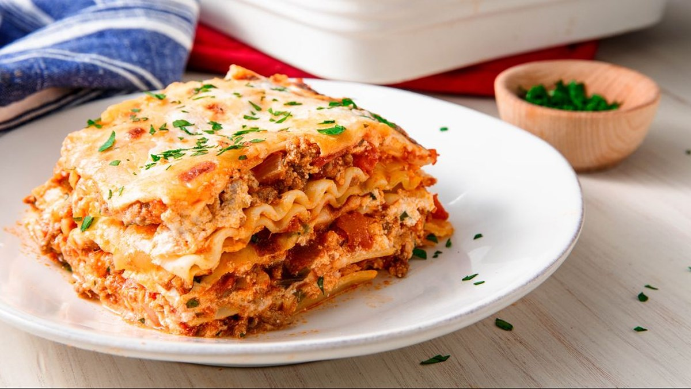

Lasagna

Description
Making lasagna can be time-consuming, but the results are well worth the wait.
You'll find a detailed ingredient list and step-by-step instructions in the recipe below.
Ingredient
-
Meat: This super meaty lasagna has sweet Italian sausage and lean ground beef.
-
Onion and garlic: An onion and two cloves of garlic are cooked with the meat to add tons of flavor.
-
Tomato products: You'll need a can of crushed tomatoes, two cans of tomato sauce, and two cans of tomato paste.
-
Sugar: Two tablespoons of white sugar add subtle sweetness and enhance the flavor of the sauce.
-
Spices and seasonings: This lasagna recipe is flavored with fresh parsley, dried basil leaves, salt, Italian seasoning, fennel seeds, and black pepper.
-
Lasagna noodles: Use store-bought or homemade lasagna noodles.
-
Cheeses: Parmesan, mozzarella, and ricotta cheese make this lasagna extra decadent.
-
Egg: An egg helps bind the ricotta so it doesn't ooze out of the lasagna when you cut into it.
Steps
-
Gather all your ingredients.
-
Cook sausage, ground beef, onion, and garlic in a Dutch oven over medium heat until well browned.
-
Stir in crushed tomatoes, tomato sauce, tomato paste, and water. Season with sugar, 2 tablespoons parsley, basil, 1 teaspoon salt, Italian seasoning, fennel seeds, and pepper. Simmer, covered, for about 1 ½ hours, stirring occasionally.